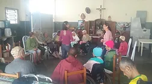

O Centro Comunitário de Matias Barbosa é uma Instituição de Longa Permanência para Idosos (ILPI), sem fins lucrativos, filantrópica. Atende atualmente 26 idosos e um adulto sem referência familiar. Desses 26 idosos, 22 são independentes e 04 são dependentes total.
Todos os institucionalizados são atendimentos por profissionais contratados (CLT), que são eles: Técnicas de Enfermagens (3), Assistente Social(1), Responsável Técnico(1), Assistente Administrativo(1), Cuidador de Idoso(5), Cozinheira(2), Serviço Gerais(3). Este número de funcionários é definido nas regras pela Resolução da Diretoria Colegiada/Anvisa 283/20005.
O atendimento aos residentes são os cuidados diários, tais com: alimentação, higiene, administração de medicamentos, encaminhamento e acompanhamento a consultas, recreação, participação em eventos públicos ou privados, liberdade a prática religiosa, recebimento de visitas diárias, etc.
Endereço: Rua Doutor José Mariano, nº94, Matias Barbosa-MG
AJUDE! O Centro Comunitário de Matias Barbosa recebe doações voluntarias em espécie para manutenção e continuidade do trabalho de caractér social.
Doe: Agência: 3210-7 Conta: 8271-1 Banco do Brasil.